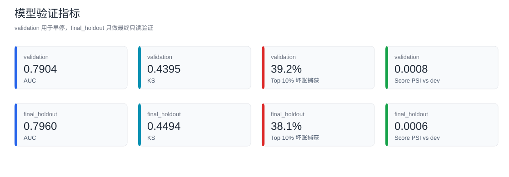
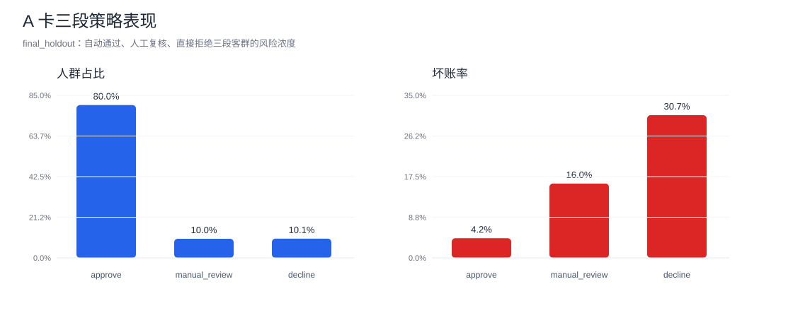
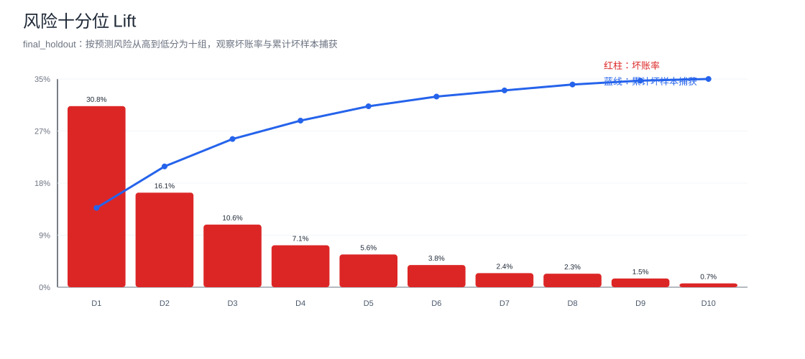
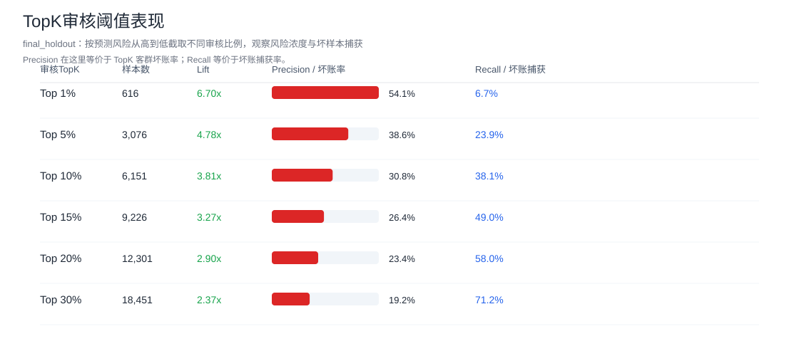
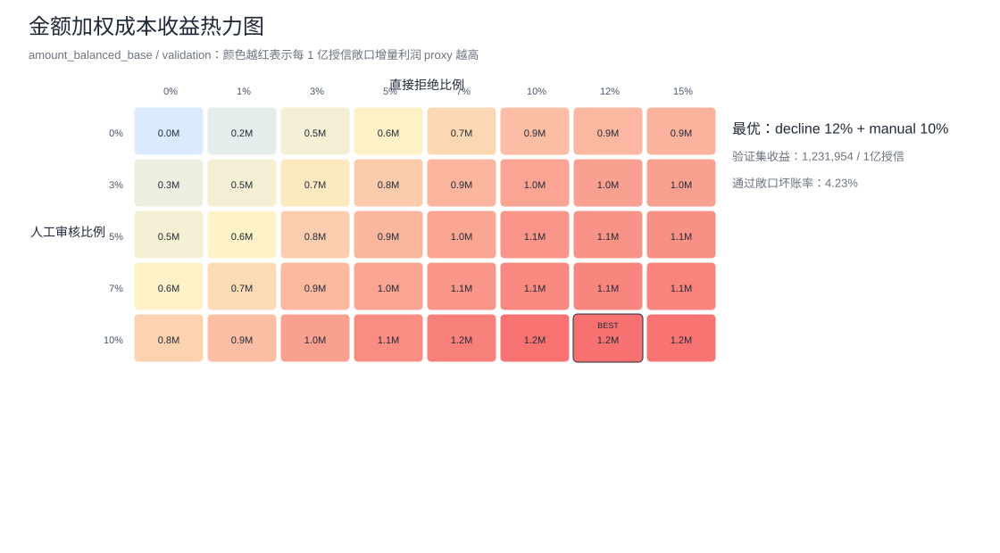
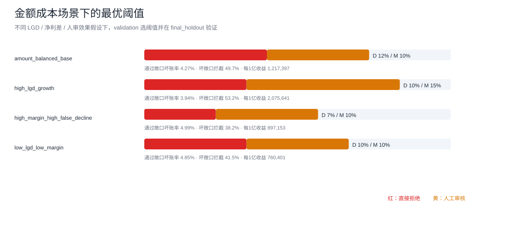
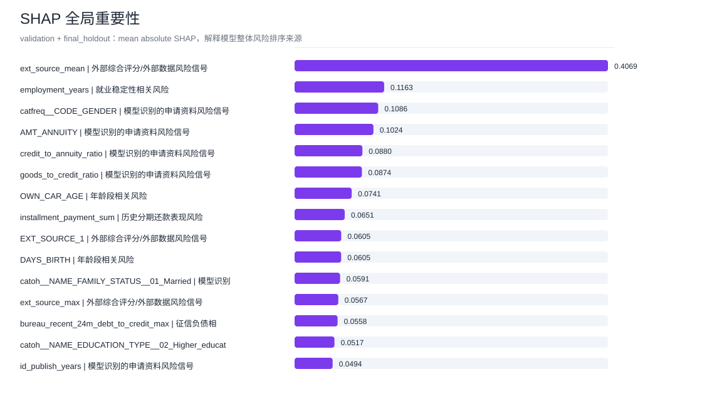
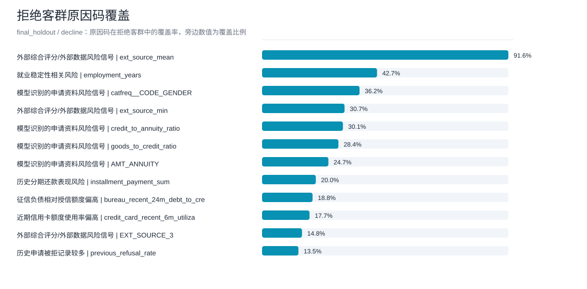

Home Credit A卡风控策略可视化
图表聚焦模型排序、TopK审核表现、三段准入策略、金额加权成本收益、SHAP解释和原因码。
项目概览
数据来源Home Credit Default Risk（Kaggle）多表信贷申请与历史履约数据
样本量有标签 train 307,511；官方无标签 test 48,744
特征构建申请级特征集市 542 个字段；建模候选 674 个特征
特征筛选质量、单变量、PSI 和相关性筛选后保留 368 个入模特征
模型Logit baseline + LightGBM GBDT；主模型使用 LightGBM
验证口径development 184,507 / validation 61,502 / final_holdout 61,502；坏账率 8.07%
核心结果
final_holdout AUC0.7960
KS0.4494
PR-AUC / AP0.2913
Top10 Precision / Recall30.8% / 38.1%
金额成本最优策略D 12% / M 10%
通过敞口坏账率4.27%
每1亿授信收益 proxy1,217,397







